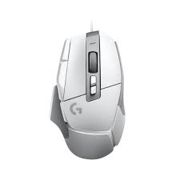

.jpg)
 |
 |
.png) |
 |
 |
| เกมมิ่งเกียร์(Gaming Gear) | |
| เกมมิ่งเกียร์ ( Gaming Gear ) คือ อุปกรณ์สำหรับเชื่อมต่อคอมพิวเตอร์ที่ถูกผลิตขึ้นมาเพื่อตอบสนองความต้องการของกลุ่มคนเล่นเกม เกมเมอร์ หรือ ผู้ที่ต้องการใช้งานอุปกรณ์เหล่านี้โดยเฉพาะ ซึ่งเกมมิ่งเกียร์เหล่านี้จะมีเทคโนโลยีหลายๆอย่างที่แตกต่างไปจากอุปกรณ์ใช้งานคอมพิวเตอร์ทั่วๆไป ซึ่งทำให้ใช้งานได้ ทนทานกว่า แม่นยำกว่า | |
|  | |
| 1. เกมมิ่งเมาส์ ( Gaming Mouse ) หรือ เมาส์เกมมิ่ง คืออุปกรณ์ที่ใช้ในการควบคุมเลื่อน Cursor ใช้ในการชี้ คลิก ออกคำสั่งไปจนถึงลากสิ่งต่างๆบนจอคอมพิวเตอร์ รวมไปถึงถ้าใช้ในการเล่นเกมแนว FPS ก็จะใช้ในการหันซ้าย - ขวา ทิศทางของตัวละครได้อีกด้วย โดยประเภทของเมาส์จะแบ่งได้เป็น 2 ประเภทหลักๆ ตามลักษณะรูปทรงของตัวเมาส์ดังนี้ 1.1 ) เมาส์ทรงเฉพาะมือ หรือ Ergonomic Mouse โดยเมาส์ประเภทนี้จะถูกผลิตออกมาเพื่อคนถนัดมือข้างใดข้างหนึ่งโดยเฉพาะ จะมีรูปทรงที่ค่อนข้างเข้ากับมือได้ง่าย ใช้งานได้นานไม่เมื่อยมือ 1.2 ) เมาส์ทรงบาลานซ์ หรือ Balance Mouse เมาส์ประเภทนี้จะถูกผลิตออกมาเพื่อให้คนที่จับเมาส์ได้แบบทั่วไปสามารถใช้งานได้ จะมีลักษณะที่สามารถใช้งานได้ทั้ง 2 มือ ไม่มีรูปทรงที่เข้ากับมือตายตัว สามารถปรับแต่งได้ในโปรแกรมนั่นเอง |
2. เกมมิ่งคีย์บอร์ด ( Gaming Keyboard ) หรือ คีย์บอร์ดเกมมิ่ง ก็คืออุปกรณ์ที่ใช้ใน พิม ส่งสัญญาณ ตัวอักษร หรือ ใช้ในการสือสารต่างๆกับคอมพิวเตอร์ และ ผู้คนผ่านทางโซเชียล แต่สำหรับคีบอร์ดเกมมิ่งนั้นจะมีลักษณะที่ค่อนข้างทนทานกว่า ใช้งานมาโครได้ ปรับลูกเล่นไฟต่างๆได้ และตอบสนองได้ดีกว่า โดย เกมมิ่งคีบอร์ด สามารถแบ่งได้ตามลักษณะส่วนประกอบของสวิตซ์นั่นเอง 2.1 ) ปุ่มยาง ( Rubber Dome ) มีลักษณะเป็นคีบอร์ดหาได้ทั่วไป ใช้การช็อตของตัวบอร์ด PCB กับ สวิตช์เป็นการนำสัญญาณไฟฟ้า แปลงเข้าสู่คอมพิวเตอร์ ถ้าปุ่มใดปุ่มนึงเสีย คือต้องโยนทิ้งทั้งหมด ไม่สามารถใช้งานปุ่มอื่นๆได้ มีราคาถูก และหาซื้อได้ง่าย 2.2 ) แมคคานิคอลคีย์บอร์ด ( Mechanical Keyboard ) มีลักษณะเป็นคีบอร์ดที่มีสวิตช์เป็นเหล็ก มีขวดลวดสปริงอยู่ข้างในช่วยในการคืนตัวของสวิตช์ โดยจะจำแนกประเภทของแมคคานิคอลได้ตามสีของสวิตช์ เช่น ed , Blue , Brown , Black , Green , Speed เป็นต้น มีข้อดีคือทนทานมาก และ ไม่ค่อยมีอาการเบิ้ล 2.3 ) ออพติคอลคีย์บอร์ด ( Optical Keyboard ) มีลักษณะคล้ายคลึงกับ Mechanical Keyboard แต่จะใช้แสงอินฟาเรดส่องผ่านไปยังอีกขั้ว เพื่อใช้ในการส่งสัญญาณว่าปุ่มมีการกดใช้หรือไม่นั่นเอง โดย ออพติคอลคีย์บอร์ด มีอยู่ 2 ประเภท คือ LK Switch ( Light Strike Switch ) และ Flaretech Switch |
3. หูฟังเกมมิ่ง ( Headphone ) เป็นอีกหนึ่งอุปกรณ์ที่ขาดไม่ได้ในปัจจุบัน ใช้ในการรับรู้เสียง จากคอมพิวเตอร์หรือสื่อ มีเดีย ต่างๆ ซึ่งมีทั้งแบบมีสาย ( Wire ) และ แบบไร้สาย ( Wireless ) โดยหูฟังที่ใช้ในการเล่นเกมนั้น จะแบ่งตามการใส่ได้ 2 ประเภท คือ |
4. แผ่นรองเมาส์เกมมิ่ง ( Gaming Mousepad ) หรือ แผ่นรองเมาส์ คืออุปกรณ์ที่ถูกผลิตขึ้นมาเป็นพื้นที่ฐานรองรับสำหรับการใช้งานเมาส์ในสถานที่หรือบนพื้นผิวต่างๆ อีกทั้งแผ่นรองเมาส์เหล่านี้ยังใช้ประโยชน์ในการถนอมเมาส์ รองข้อมือได้อีกด้วย โดยแผ่นรองเมาส์เกมมิ่ง สามารถจำแนกได้ตามพื้นผิวดังนี้ |